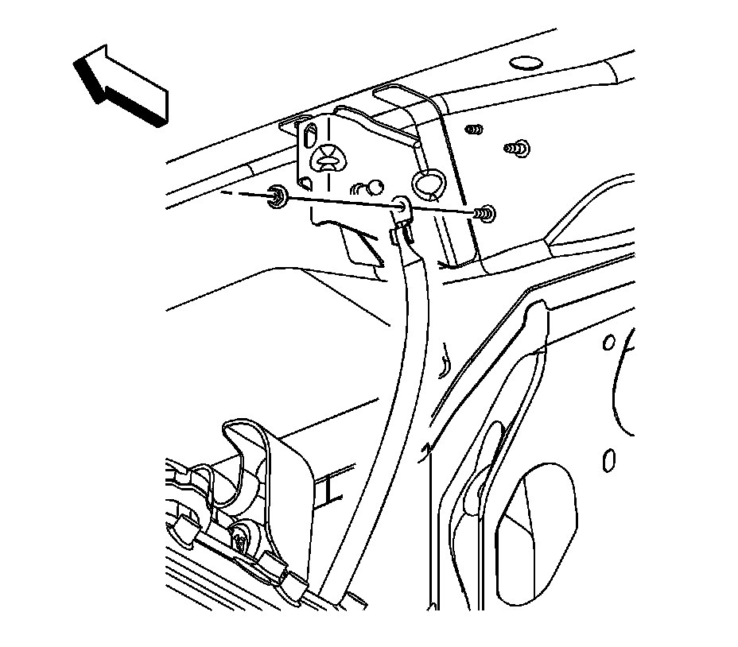
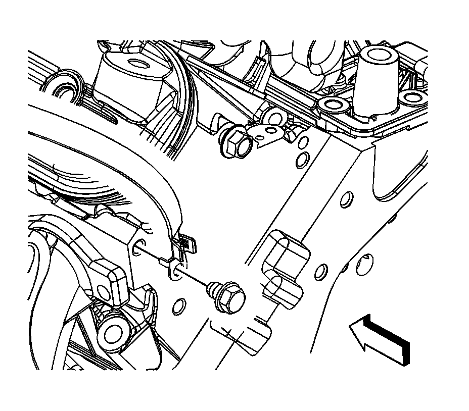

Ground Strap: Service and Repair
ENGINE GROUND STRAP REPLACEMENT
REMOVAL PROCEDURE

1. Remove the upper intake manifold sight shield.
2. Remove the engine ground strap nut at the front plenum panel.
3. Remove the ground strap terminal from the stud.

4. Remove the engine ground strap bolt from the rear of the left cylinder head.
5. Remove the ground strap from the vehicle.
INSTALLATION PROCEDURE
1. Install the ground strap to the vehicle.
2. Install the ground strap terminal to the stud.
3. NOTE: Refer to Fastener Notice.
Install the engine ground strap nut at the front plenum panel.
Tighten the nut to 9 N.m (80 lb in).
4. Position the ground strap to the rear of the left cylinder head.
Tighten the bolt to 16 N.m (12 lb ft).
5. Install the engine ground strap bolt to the rear of the left cylinder head.
6. Install the upper intake manifold sight shield.